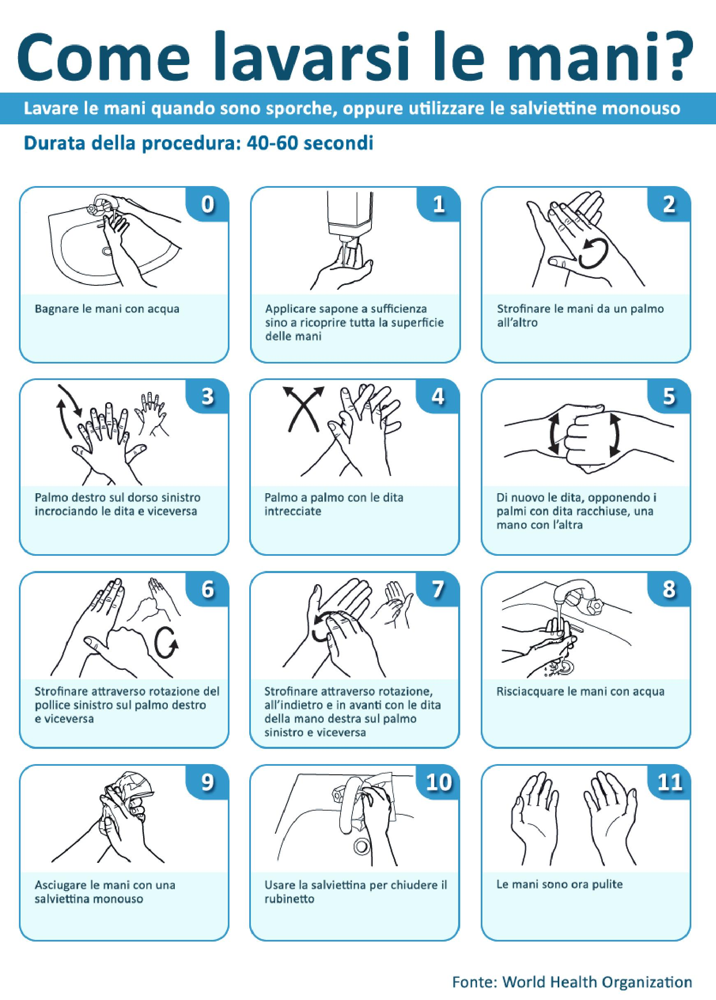

PC
Protezione CivileGruppo Comunale Volontari — Genzano di Roma
Bambini · 3-5 anni
Lavaggio completo delle mani
Scheda 10 · procedura completa WHO
Procedura completa per l'igiene delle mani. Segui tutti i passaggi illustrati, con l'aiuto di un adulto. È utile a casa, a scuola, in emergenza e nelle aree di accoglienza.
